pacman::p_load(sf, tmap, tidyverse, rvest)Thematic Mapping and GeoVisualisation with R
Hands-on Exercise 1
1 Overview
This page presents my thematic mapping workflow for Singapore’s 2024 subzone population data. I prepare the boundary and population table first, then use tmap to see how classification, borders, palettes, facets, and outlier highlighting change the story of the same dependency-ratio data.
NoteLocal Implementation Note
The local boundary data is stored as GeoJSON, so the useful planning-area fields are already separate columns. The helper function below is kept for reproducibility when a boundary file contains a Description field.
2 Installing and Loading the R Packages
3 Importing and Preparing the Boundary Layer
mpsz <- st_read("data/geospatial/MasterPlan2019SubzoneBoundaryNoSeaGEOJSON.geojson",
quiet = TRUE) %>%
st_zm(drop = TRUE, what = "ZM") %>%
st_transform(crs = 3414)extract_kml_field <- function(html_text, field_name) {
if (is.na(html_text) || html_text == "") return(NA_character_)
page <- read_html(html_text)
rows <- page %>% html_elements("tr")
value <- rows %>%
keep(~ html_text2(html_element(.x, "th")) == field_name) %>%
html_element("td") %>%
html_text2()
if (length(value) == 0) NA_character_ else value
}if ("Description" %in% names(mpsz)) {
mpsz <- mpsz %>%
mutate(
REGION_N = map_chr(Description, extract_kml_field, "REGION_N"),
PLN_AREA_N = map_chr(Description, extract_kml_field, "PLN_AREA_N"),
SUBZONE_N = map_chr(Description, extract_kml_field, "SUBZONE_N"),
SUBZONE_C = map_chr(Description, extract_kml_field, "SUBZONE_C")
) %>%
select(-Name, -Description) %>%
relocate(geometry, .after = last_col())
} else {
mpsz <- mpsz %>%
select(REGION_N, PLN_AREA_N, SUBZONE_N, SUBZONE_C, geometry)
}mpszSimple feature collection with 332 features and 4 fields
Geometry type: MULTIPOLYGON
Dimension: XY
Bounding box: xmin: 2667.538 ymin: 15748.72 xmax: 56396.44 ymax: 50256.33
Projected CRS: SVY21 / Singapore TM
First 10 features:
REGION_N PLN_AREA_N SUBZONE_N SUBZONE_C
1 CENTRAL REGION BUKIT MERAH DEPOT ROAD BMSZ12
2 CENTRAL REGION BUKIT MERAH BUKIT MERAH BMSZ02
3 CENTRAL REGION OUTRAM CHINATOWN OTSZ03
4 CENTRAL REGION DOWNTOWN CORE PHILLIP DTSZ04
5 CENTRAL REGION DOWNTOWN CORE RAFFLES PLACE DTSZ05
6 CENTRAL REGION OUTRAM CHINA SQUARE OTSZ04
7 CENTRAL REGION BUKIT MERAH TIONG BAHRU BMSZ10
8 CENTRAL REGION DOWNTOWN CORE BAYFRONT SUBZONE DTSZ12
9 CENTRAL REGION BUKIT MERAH TIONG BAHRU STATION BMSZ04
10 CENTRAL REGION DOWNTOWN CORE CLIFFORD PIER DTSZ06
geometry
1 MULTIPOLYGON (((25910.34 29...
2 MULTIPOLYGON (((26750.09 29...
3 MULTIPOLYGON (((29161.2 297...
4 MULTIPOLYGON (((29814.11 29...
5 MULTIPOLYGON (((30137.77 29...
6 MULTIPOLYGON (((29699.44 29...
7 MULTIPOLYGON (((27748.04 29...
8 MULTIPOLYGON (((30844.87 29...
9 MULTIPOLYGON (((27444.04 29...
10 MULTIPOLYGON (((30436.73 29...4 Importing and Preparing the Population Data
The SingStat population table is aspatial. It needs to be summarised by planning area, subzone, and age group before joining to the subzone boundary.
popdata <- read_csv("data/aspatial/respopagesextod2024.csv")young_age <- c("0_to_4", "5_to_9", "10_to_14", "15_to_19")
active_age <- c("20_to_24", "25_to_29", "30_to_34", "35_to_39",
"40_to_44", "45_to_49", "50_to_54", "55_to_59",
"60_to_64")
aged_age <- c("65_to_69", "70_to_74", "75_to_79", "80_to_84",
"85_to_89", "90_and_over")
popdata2024 <- popdata %>%
group_by(PA, SZ, AG) %>%
summarise(POP = sum(Pop), .groups = "drop") %>%
pivot_wider(names_from = AG,
values_from = POP,
values_fill = 0) %>%
mutate(
YOUNG = rowSums(across(any_of(young_age))),
`ECONOMY ACTIVE` = rowSums(across(any_of(active_age))),
AGED = rowSums(across(any_of(aged_age))),
TOTAL = YOUNG + `ECONOMY ACTIVE` + AGED,
DEPENDENCY = (YOUNG + AGED) / `ECONOMY ACTIVE`
) %>%
select(PA, SZ, YOUNG, `ECONOMY ACTIVE`, AGED, TOTAL, DEPENDENCY)popdata2024 <- popdata2024 %>%
mutate(PA = toupper(PA),
SZ = toupper(SZ)) %>%
filter(`ECONOMY ACTIVE` > 0)mpsz_pop2024 <- left_join(mpsz,
popdata2024,
by = c("SUBZONE_N" = "SZ"))dir.create("data/rds", recursive = TRUE, showWarnings = FALSE)
write_rds(mpsz_pop2024, "data/rds/mpsz_pop2024.rds")5 A Quick Choropleth Map
tmap_mode("plot")
qtm(shp = mpsz_pop2024,
fill = "DEPENDENCY")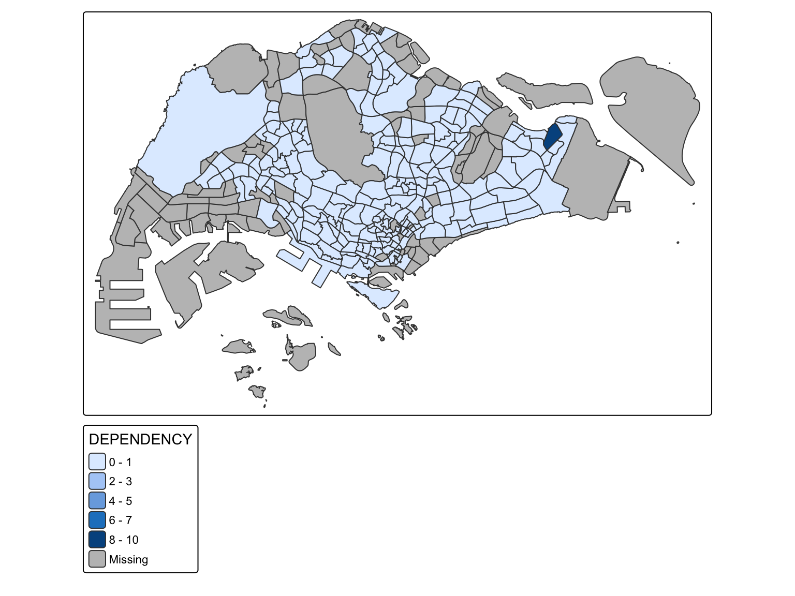
NoteFirst Impression
The quick map is useful as a first check because it confirms that the joined attribute can be mapped immediately. At the same time, it feels too plain for communication: the legend, classification, borders, and layout still need design work before the map can support a clear interpretation.
6 Designing the Map
The next map uses a fuller tmap composition: filled polygons, title, border, compass, scale bar, grid, and data credits.
tm_shape(mpsz_pop2024) +
tm_polygons(fill = "DEPENDENCY",
fill.scale = tm_scale_intervals(
style = "quantile",
n = 5,
values = "brewer.blues"),
fill.legend = tm_legend(
title = "Dependency ratio")) +
tm_title("Distribution of Dependency Ratio by planning subzone") +
tm_layout(frame = TRUE) +
tm_borders(fill_alpha = 0.5) +
tm_compass(type="8star", size = 2) +
tm_scalebar() +
tm_grid(alpha =0.2) +
tm_credits("Source: Planning Sub-zone boundary from Urban Redevelopment Authority (URA)\n and Population data from Department of Statistics DOS",
position = c("left", "bottom"))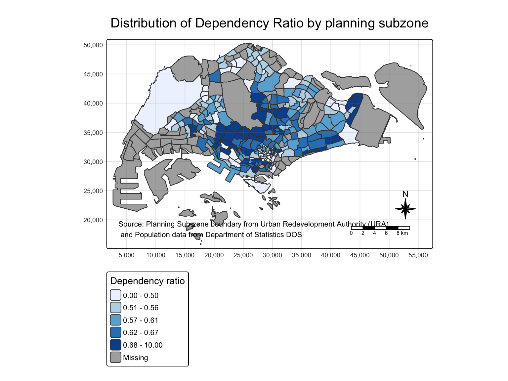
TipWhat I Noticed
The dependency ratio map is sensitive to classification. I find the quantile map useful for comparison because each class has a similar number of subzones, but it can also make small numeric differences look more dramatic.
7 Choropleth Mapping Choices
The following blocks show how small tmap design choices change the same spatial pattern.
tm_shape(mpsz_pop2024) +
tm_polygons()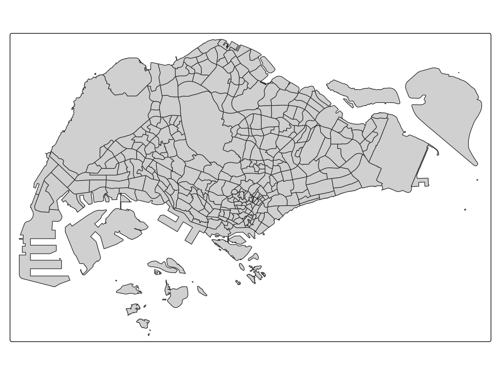
tm_shape(mpsz_pop2024)+
tm_polygons(fill = "DEPENDENCY")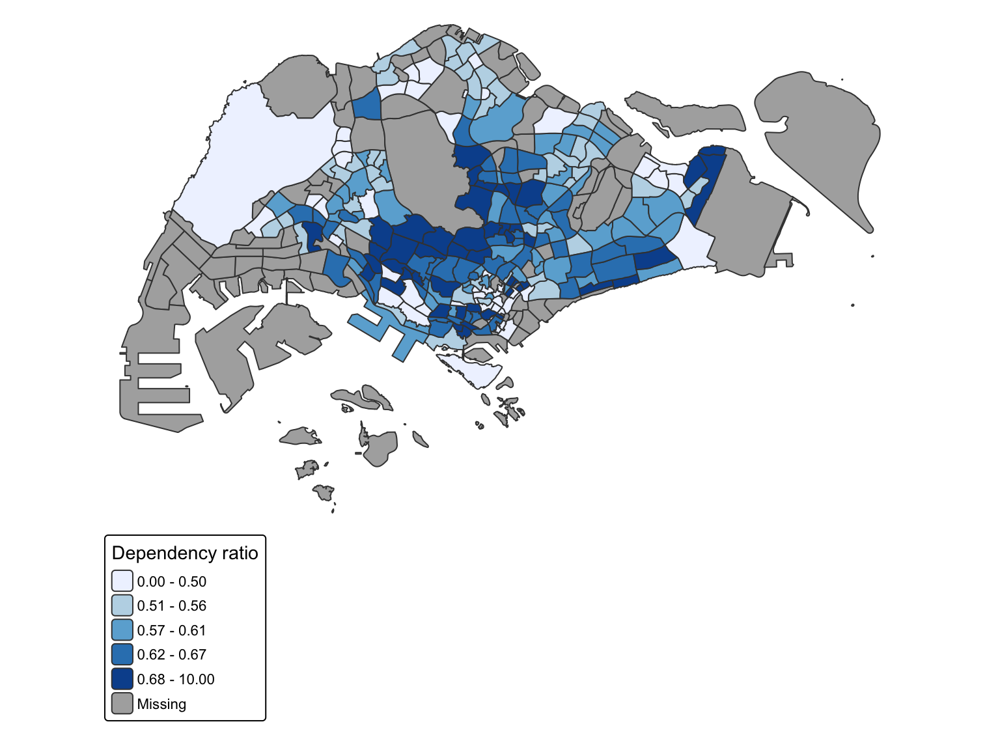
tm_shape(mpsz_pop2024)+
tm_fill("DEPENDENCY")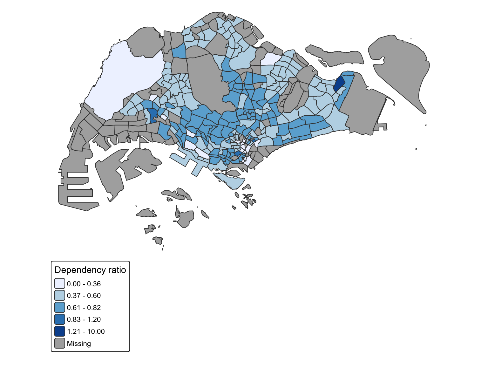
tm_shape(mpsz_pop2024)+
tm_fill("DEPENDENCY") +
tm_borders()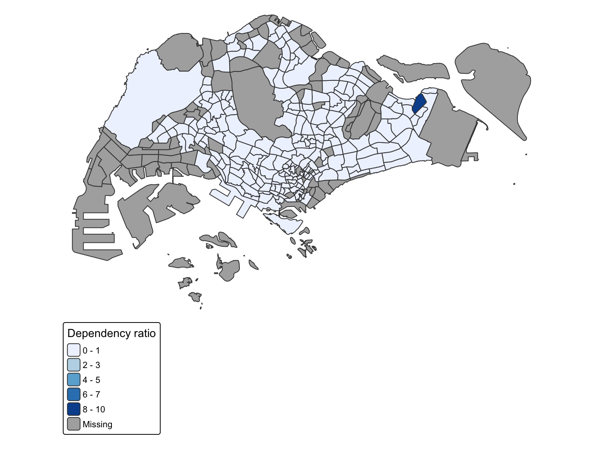
tm_shape(mpsz_pop2024)+
tm_fill("DEPENDENCY") +
tm_borders(col = "grey60",
lwd = 0.1,
lty = "dashed")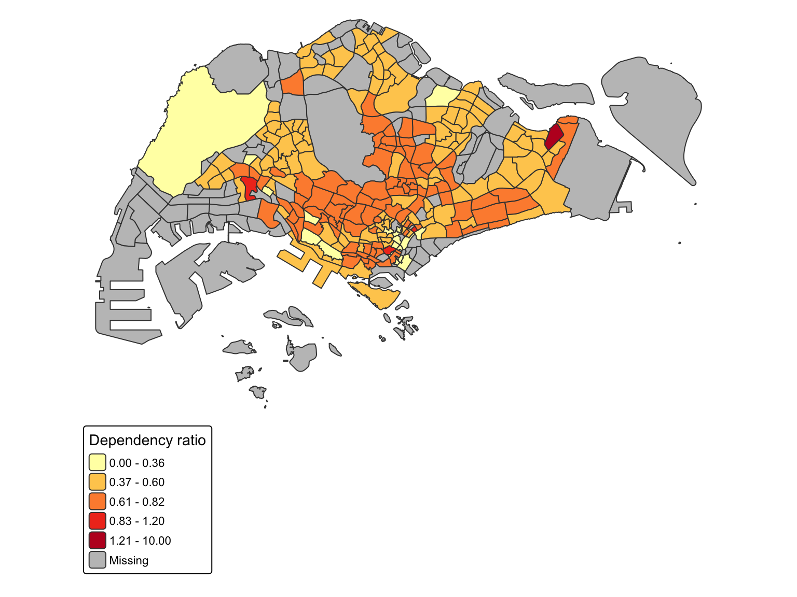
tm_shape(mpsz_pop2024) +
tm_polygons(fill = "DEPENDENCY",
fill.scale = tm_scale_intervals(
style = "quantile",
n = 5)) +
tm_borders(fill_alpha = 0.5)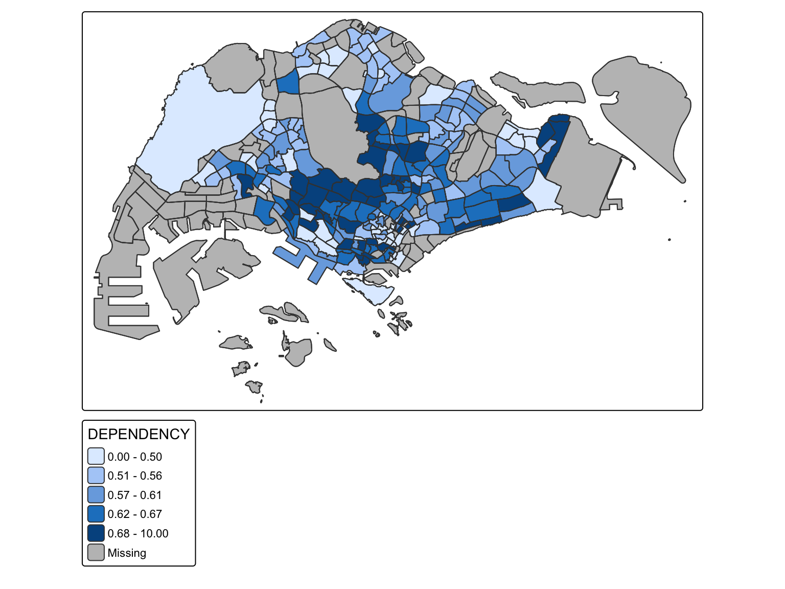
tm_shape(mpsz_pop2024) +
tm_polygons(fill = "DEPENDENCY",
fill.scale = tm_scale_intervals(
style = "equal",
n = 5)) +
tm_borders(fill_alpha = 0.5)summary(mpsz_pop2024$DEPENDENCY) Min. 1st Qu. Median Mean 3rd Qu. Max. NAs
0.0000 0.5300 0.5905 0.6168 0.6612 10.0000 94 tm_shape(mpsz_pop2024)+
tm_polygons(fill = "DEPENDENCY",
fill.scale = tm_scale_intervals(
breaks = c(0, 0.60, 0.70, 0.80, 0.90, 1.00))) +
tm_borders(fill_alpha = 0.5)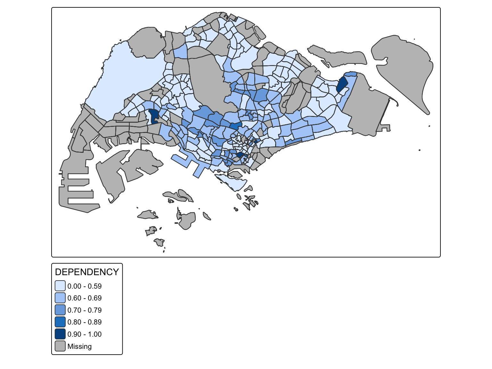
tm_shape(mpsz_pop2024) +
tm_polygons(fill = "DEPENDENCY",
fill.scale = tm_scale_intervals(
style = "quantile",
n = 5,
values = "brewer.greens")) +
tm_borders(fill_alpha = 0.5)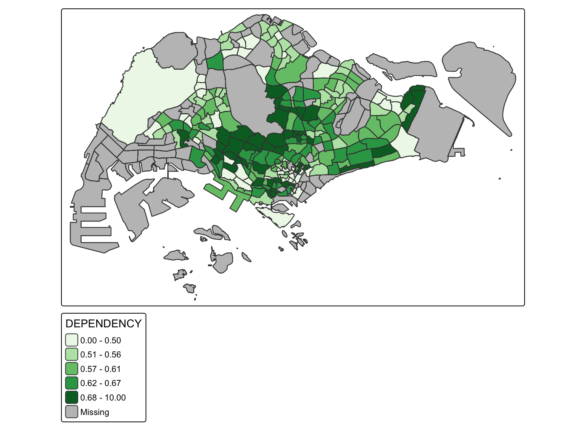
tm_shape(mpsz_pop2024) +
tm_polygons(fill = "DEPENDENCY",
fill.scale = tm_scale_intervals(
style = "quantile",
n = 5,
values = "-brewer.greens")) +
tm_borders(fill_alpha = 0.5)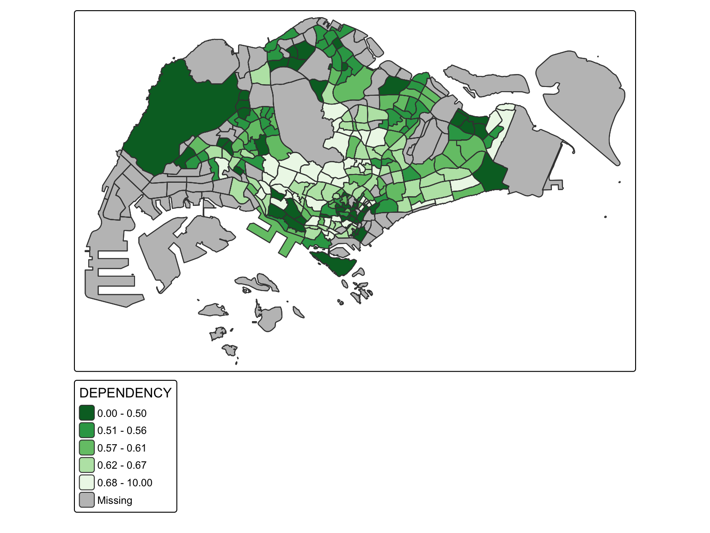
tm_shape(mpsz_pop2024) +
tm_polygons(fill = "DEPENDENCY",
fill.scale = tm_scale_intervals(
style = "quantile",
n = 5)) +
tm_borders(fill_alpha = 0.5) +
tm_compass(type="8star", size = 2) +
tm_scalebar() +
tm_grid(lwd = 0.1, alpha = 0.2) +
tm_credits("Source: data.gov.sg & singstat",
position = c("left", "bottom"))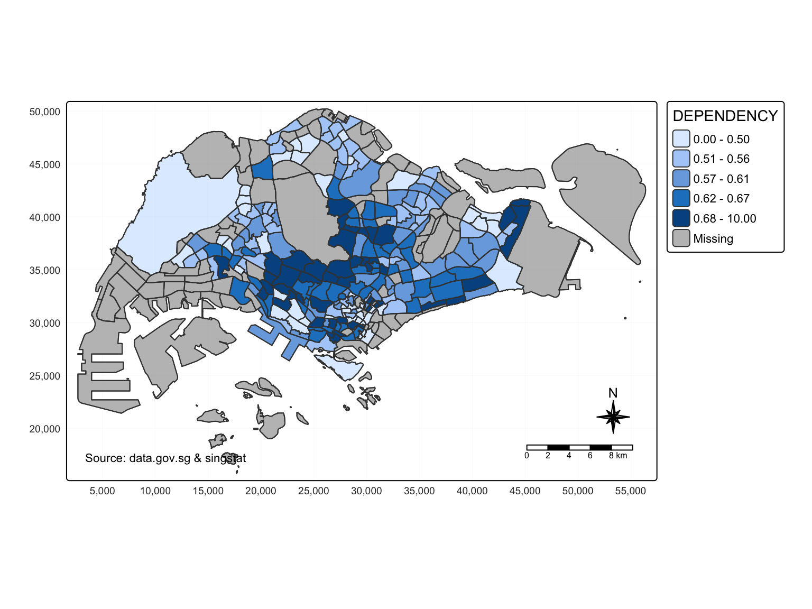
tm_shape(mpsz_pop2024) +
tm_polygons(fill = "DEPENDENCY",
fill.scale = tm_scale_intervals(
style = "quantile",
n = 5),
fill.legend = tm_legend(
title = "Dependency ratio")) +
tm_pos_auto_in() +
tm_borders(fill_alpha = 0.5) +
tm_compass(type="8star", size = 2) +
tm_scalebar() +
tm_grid(lwd = 0.1, alpha = 0.2) +
tm_credits("Source: data.gov.sg & singstat",
position = c("left", "bottom"))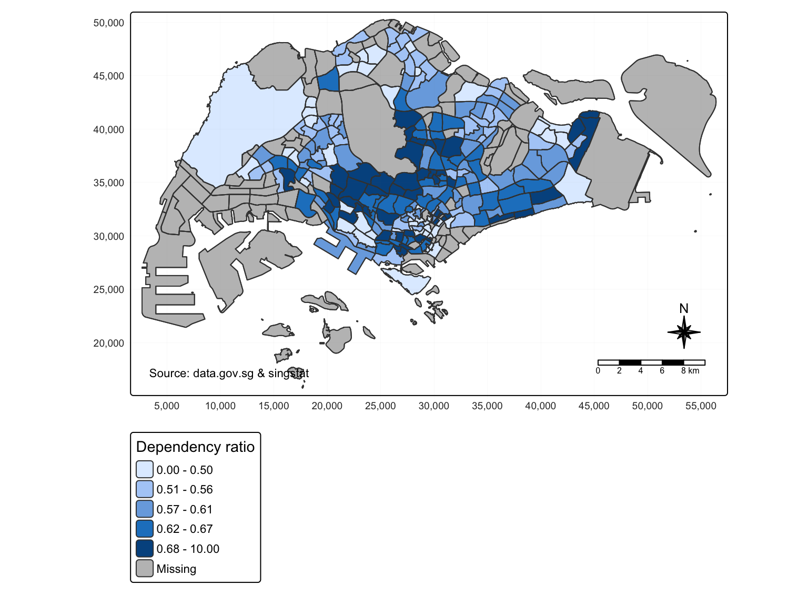
tm_shape(mpsz_pop2024) +
tm_polygons(fill = "DEPENDENCY",
fill.scale = tm_scale_intervals(
style = "quantile",
n = 5,
values = "-brewer.greens")) +
tm_borders(fill_alpha = 0.5) +
tmap_style("natural")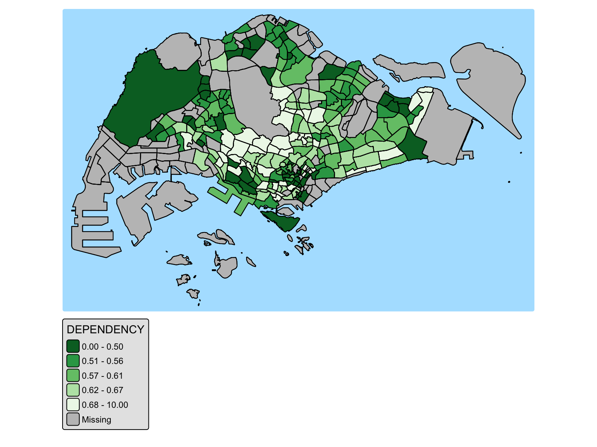
tmap_style("white")
TipWhat I Noticed
The summary shows that most subzones sit around the middle of the dependency-ratio range, but a few areas are much higher. That is why the fixed break map and the quantile map do not feel the same: one emphasises numeric thresholds, while the other forces spatial comparison by rank.
tm_shape(mpsz_pop2024) +
tm_polygons(
fill = c("YOUNG", "AGED"),
fill.legend =
tm_legend(position = tm_pos_in(
"right", "bottom")),
fill.scale = tm_scale_intervals(
style = "equal",
n = 5,
values = "brewer.blues")) +
tm_borders(fill_alpha = 0.5) +
tmap_style("natural")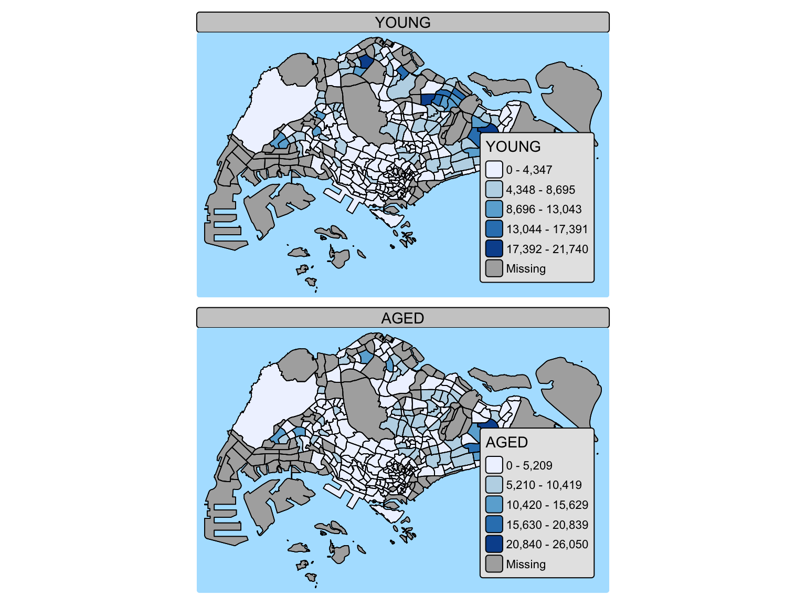
TipWhat I Noticed
Mapping young and aged population side by side makes the dependency ratio more understandable. Instead of treating dependency as one abstract number, I can see that it is produced by two different age structures, and those two patterns do not always peak in the same places.
8 Small Multiple Maps
Small multiples make it easier to compare young and aged population patterns without changing datasets between plots.
youngmap <- tm_shape(mpsz_pop2024)+
tm_polygons(fill = "YOUNG",
fill.legend = tm_legend(
position = tm_pos_in(
"right", "bottom"),
item.height = 0.8),
fill.scale = tm_scale_intervals(
style = "quantile",
values = "brewer.blues")) +
tm_borders(fill_alpha = 0.5) +
tm_title("Distribution of young population")
agedmap <- tm_shape(mpsz_pop2024)+
tm_polygons(fill = "AGED",
fill.legend = tm_legend(
position = tm_pos_in(
"right", "bottom"),
item.height = 0.8),
fill.scale = tm_scale_intervals(
style = "quantile",
values = "brewer.blues")) +
tm_borders(fill_alpha = 0.5) +
tm_title("Distribution of aged population")
tmap_arrange(youngmap, agedmap, asp=1, ncol=2)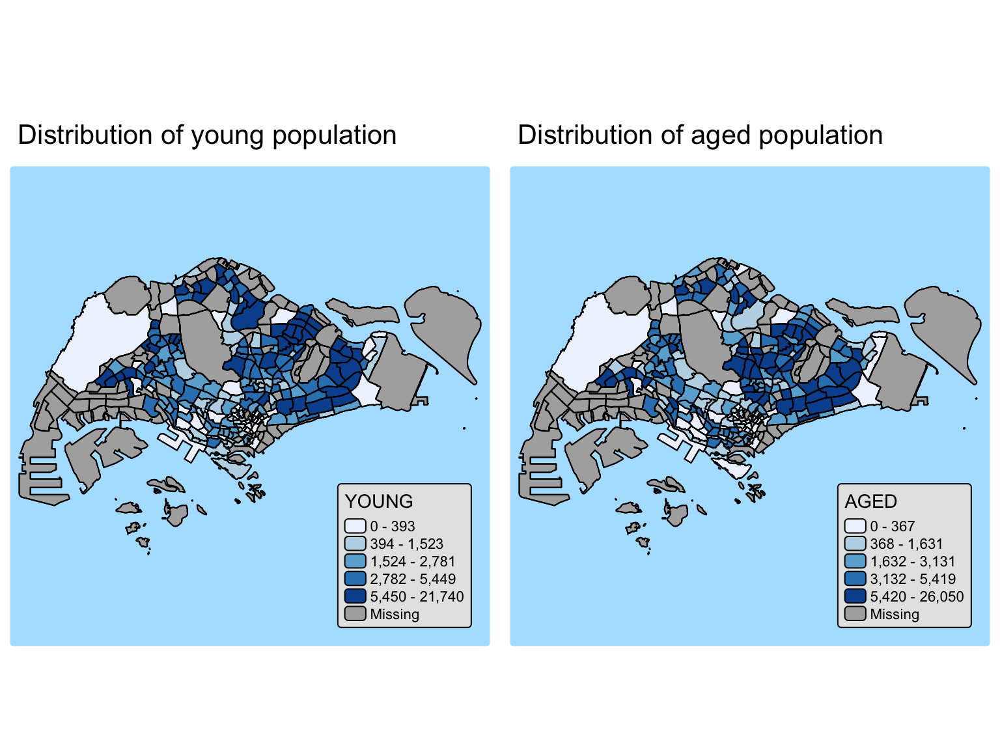
tm_shape(mpsz_pop2024) +
tm_fill(fill = "DEPENDENCY",
fill.scale = tm_scale_intervals(
style = "quantile",
values = "brewer.blues")) +
tm_facets(by = "REGION_N",
nrow = 2,
ncols = 3,
free.coords=TRUE,
drop.units=TRUE) +
tm_layout(legend.show = TRUE,
title.position = c("center", "center"),
title.size = 1.1) +
tm_borders(fill_alpha = 0.5)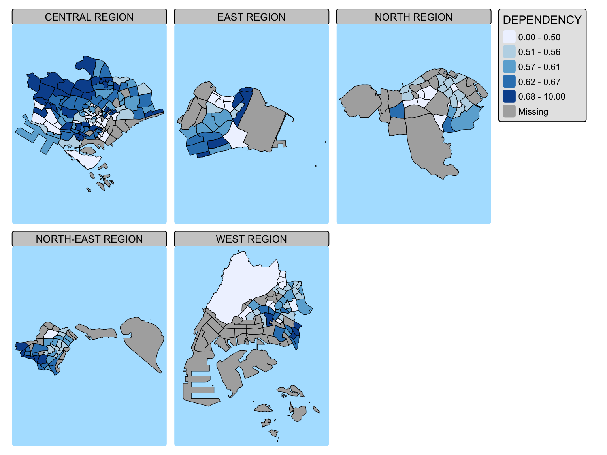
TipMy Reading of the Facets
The regional facets are helpful because Singapore-wide maps can make smaller regions hard to compare. With free.coords = TRUE, each region gets more visual space, so I can inspect internal variation within regions rather than only noticing the largest polygons on the full island map.
9 Mapping the Central Region
mpsz_pop2024 %>%
filter(REGION_N == "CENTRAL REGION") %>%
tm_shape() +
tm_polygons(fill = "DEPENDENCY",
fill.scale = tm_scale_intervals(
style = "quantile",
values = "brewer.greens"),
fill.legend = tm_legend()) +
tm_borders(fill_alpha = 0.5)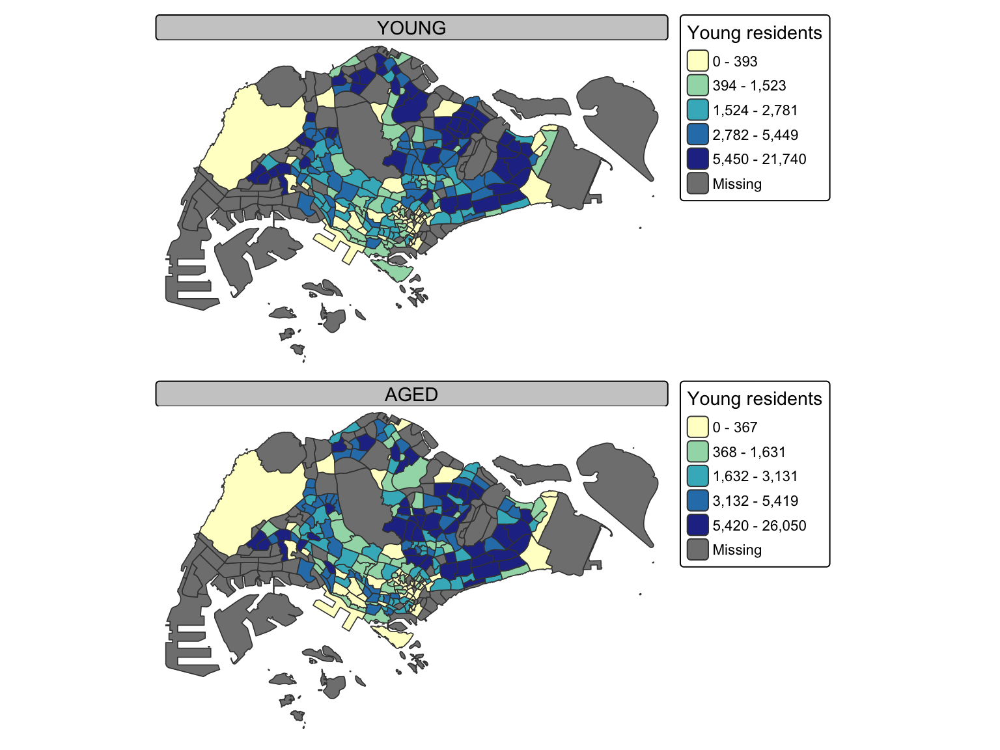
mpsz_pop2024 %>%
filter(REGION_N == "CENTRAL REGION") %>%
tm_shape() +
tm_polygons(fill = "DEPENDENCY",
fill.scale = tm_scale_intervals(
style = "quantile",
values = "brewer.greens"),
fill.legend = tm_legend(),
fill.chart = tm_chart_box()) +
tm_borders() +
tm_layout(asp = 0.8)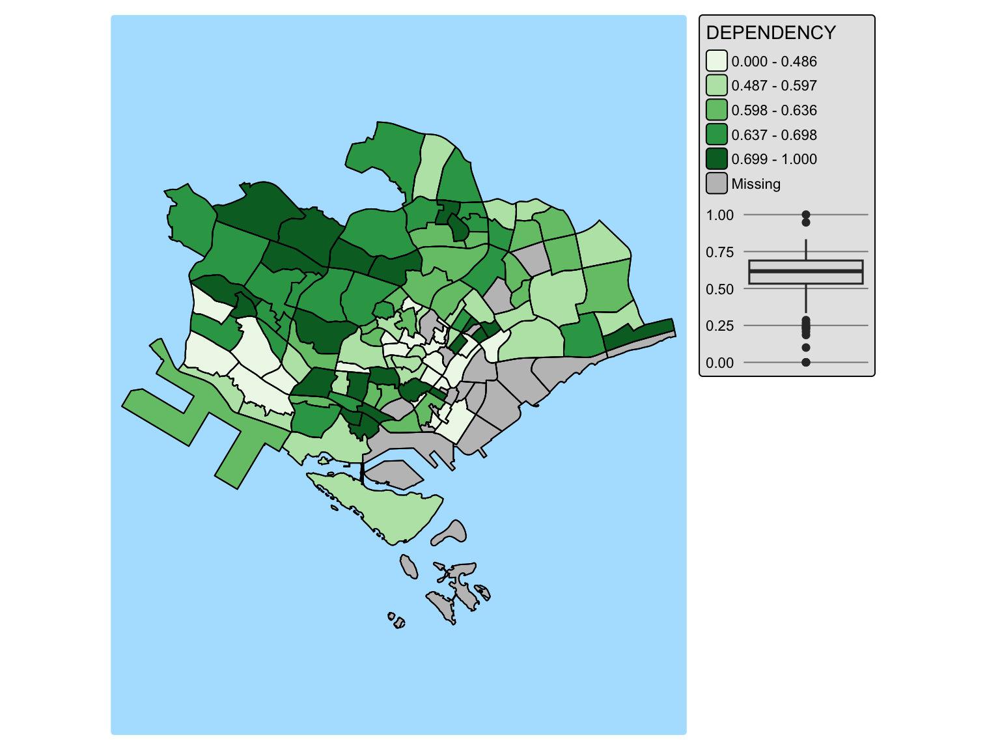
mpsz_selected <- mpsz_pop2024 %>%
filter(REGION_N == "CENTRAL REGION")
stats <- boxplot.stats(mpsz_selected$DEPENDENCY)
outlier_vals <- stats$out
outlier_sf <- mpsz_selected[mpsz_selected$DEPENDENCY %in% outlier_vals, ]
tm_shape(mpsz_selected) +
tm_polygons(fill = "DEPENDENCY",
fill.scale = tm_scale_intervals(
style = "quantile",
values = "brewer.blues"),
fill.legend = tm_legend(),
fill.chart = tm_chart_box()) +
tm_borders(fill_alpha = 0.5) +
tm_shape(outlier_sf) +
tm_borders(col = "red", lwd = 2) +
tm_text("SUBZONE_N", col = "red", size = 0.7) +
tm_layout(asp = 0.8)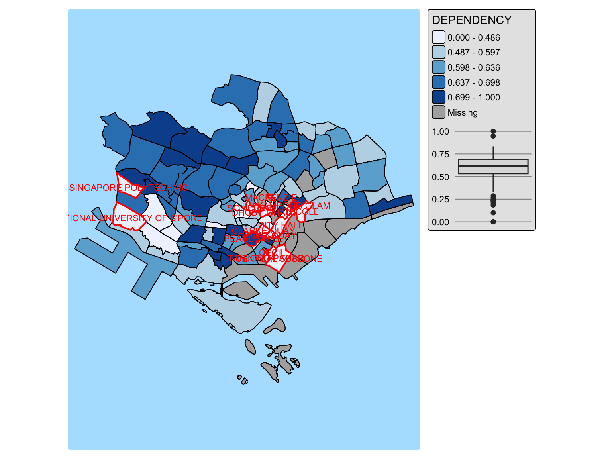
10 Interactive Mapping Code
For the website version, I render this inspection step in plot mode. The important part here is selecting the central region, setting the bounding box, and highlighting outlier subzones.
region_selected <- mpsz_pop2024 %>%
filter(REGION_N == "CENTRAL REGION")
region_bbox <- st_bbox(region_selected)
stats <- boxplot.stats(region_selected$DEPENDENCY)
outlier_vals <- stats$out
outlier_sf <- region_selected[region_selected$DEPENDENCY %in% outlier_vals, ]
tmap_mode("plot")
tm_shape(region_selected,
bbox = region_bbox) +
tm_fill("DEPENDENCY",
id = "SUBZONE_N",
popup.vars = c(
"Name" = "SUBZONE_N",
"Dependency" = "DEPENDENCY")) +
tm_borders() +
tm_shape(outlier_sf) +
tm_borders(col = "red", lwd = 2) +
tm_layout(frame = FALSE)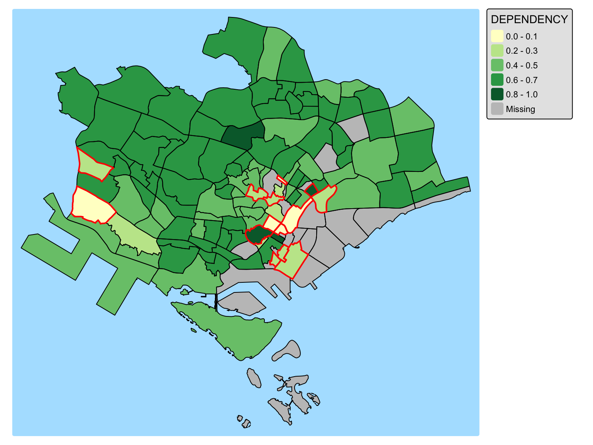
NoteMy Finding
The central region subset changes the reading scale. On the full-island map, central subzones compete visually with the rest of Singapore; after filtering, the same dependency values become easier to compare locally, and the red outlier borders feel more purposeful.
tmap_mode("plot")region_selected <- mpsz_pop2024 %>%
filter(REGION_N == "CENTRAL REGION")
region_bbox <- st_bbox(region_selected)
stats <- boxplot.stats(region_selected$DEPENDENCY)
outlier_vals <- stats$out
outlier_sf <- region_selected[region_selected$DEPENDENCY %in% outlier_vals, ]
tmap_mode("plot")
tm_shape(region_selected,
bbox = region_bbox) +
tm_fill("DEPENDENCY",
id = "SUBZONE_N",
popup.vars = c(
"Name" = "SUBZONE_N",
"Dependency" = "DEPENDENCY")) +
tm_borders() +
tm_shape(outlier_sf) +
tm_borders(col = "red", lwd = 2) +
tm_view(set_zoom_limits = c(12,14))
tmap_mode("plot")
TipWhat I Noticed
The central region view makes the outliers easier to inspect than the whole-island map. In my rendered result, places such as Pearl’s Hill and Kampong Glam stand out because the dependency ratio is high relative to nearby central subzones.
11 Beyond the Basic Choropleth
The maps above describe where dependency ratio is high or low. I also wanted to check how much of the story comes from the spatial arrangement itself, not just the distribution of the numbers.
11.1 Same Values, Shuffled Locations
set.seed(626)
mpsz_shuffle <- mpsz_pop2024 %>%
mutate(DEPENDENCY_SHUFFLED = sample(DEPENDENCY))
observed_dependency_map <- tm_shape(mpsz_pop2024) +
tm_polygons(fill = "DEPENDENCY",
fill.scale = tm_scale_intervals(
style = "quantile",
n = 5,
values = "brewer.blues"),
fill.legend = tm_legend(title = "Dependency")) +
tm_title("Observed dependency ratio") +
tm_borders(fill_alpha = 0.5)
shuffled_dependency_map <- tm_shape(mpsz_shuffle) +
tm_polygons(fill = "DEPENDENCY_SHUFFLED",
fill.scale = tm_scale_intervals(
style = "quantile",
n = 5,
values = "brewer.blues"),
fill.legend = tm_legend(title = "Dependency")) +
tm_title("Same values, shuffled") +
tm_borders(fill_alpha = 0.5)
tmap_arrange(observed_dependency_map, shuffled_dependency_map, ncol = 2)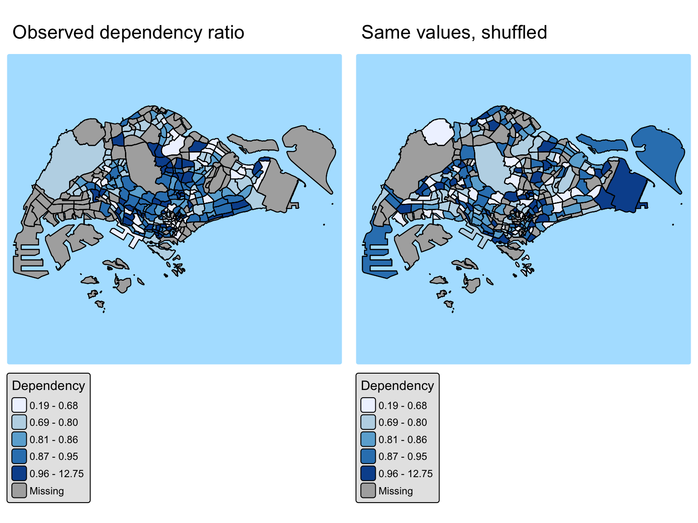
ImportantMy Finding
The shuffled map uses the same dependency-ratio values, but it breaks the connection between value and location. The observed map looks more geographically coherent, while the shuffled map looks noisier. This is a useful reminder that a choropleth is not only about the variable distribution; the spatial arrangement also carries information.
11.2 Visual Area Bias
valid_pop_area <- mpsz_pop2024 %>%
filter(!is.na(TOTAL), TOTAL > 0) %>%
mutate(area_km2 = as.numeric(st_area(geometry)) / 1000000) %>%
arrange(TOTAL)
least_pop_half <- valid_pop_area %>%
slice_head(prop = 0.5)
area_bias_summary <- tibble(
measure = c(
"Share of mapped land area in least-populated half of subzones (%)",
"Share of population in those subzones (%)"
),
value = c(
round(sum(least_pop_half$area_km2) / sum(valid_pop_area$area_km2) * 100, 1),
round(sum(least_pop_half$TOTAL) / sum(valid_pop_area$TOTAL) * 100, 1)
)
)
area_bias_summary# A tibble: 2 × 2
measure value
<chr> <dbl>
1 Share of mapped land area in least-populated half of subzones (%) 53.4
2 Share of population in those subzones (%) 12.5
NoteWhat This Changes for My Map Reading
In my output, the least-populated half of subzones takes up 53.4% of the mapped land area but contains only 12.5% of the population. That means the eye can easily overweight large, sparsely populated subzones. For population mapping, I should be careful not to read visual area as population importance.
11.3 Does Preschool Provision Broadly Follow Young Population?
preschool2019 <- st_read("data/geospatial/PreSchoolsLocation.geojson",
quiet = TRUE) %>%
st_zm(drop = TRUE, what = "ZM") %>%
st_transform(crs = 3414)
preschool_counts <- lengths(st_intersects(mpsz, preschool2019))
preschool_by_sz <- mpsz %>%
st_drop_geometry() %>%
mutate(PRESCHOOL_COUNT = preschool_counts) %>%
select(SUBZONE_N, PRESCHOOL_COUNT)
provision <- mpsz_pop2024 %>%
st_drop_geometry() %>%
filter(!is.na(TOTAL), YOUNG > 0) %>%
left_join(preschool_by_sz, by = "SUBZONE_N") %>%
mutate(
PRESCHOOL_COUNT = replace_na(PRESCHOOL_COUNT, 0),
young_per_preschool = YOUNG / pmax(PRESCHOOL_COUNT, 1),
has_preschool = PRESCHOOL_COUNT > 0
)
provision_summary <- provision %>%
summarise(
correlation = round(cor(YOUNG, PRESCHOOL_COUNT, use = "complete.obs"), 3),
subzones_without_preschool = sum(!has_preschool),
max_young_no_preschool = max(YOUNG[!has_preschool], na.rm = TRUE)
)
provision_summary correlation subzones_without_preschool max_young_no_preschool
1 0.823 20 1960ggplot(provision,
aes(x = YOUNG,
y = PRESCHOOL_COUNT,
colour = has_preschool)) +
geom_point(alpha = 0.7) +
geom_smooth(method = "lm", se = TRUE, colour = "grey30", linewidth = 0.6) +
scale_colour_manual(values = c("FALSE" = "#c2410c", "TRUE" = "#0f766e"),
labels = c("No preschool", "Has preschool"),
name = NULL) +
labs(title = "Preschool count and young population by subzone",
x = "Residents aged 0-19",
y = "Preschools in subzone") +
theme_minimal()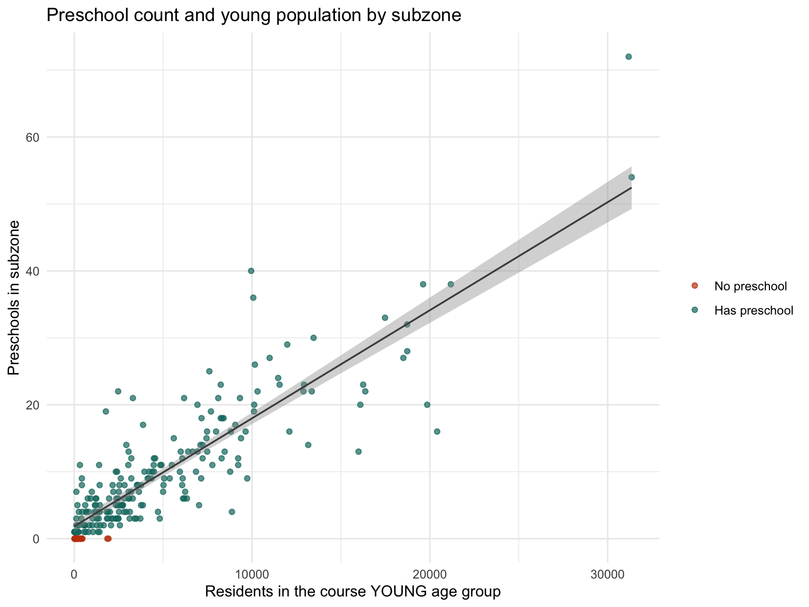
TipMy Finding
The correlation between young population and preschool count is 0.823, so the broad relationship is positive. However, 20 subzones with young residents have no preschool point in this dataset, and the largest of these still has 1960 young residents. I would treat this as an exploratory signal rather than a final provision assessment, because demand also depends on age bands, school capacity, and nearby centres across subzone boundaries.
12 Takeaway
Different classification and layout choices can change how strongly a choropleth map communicates spatial contrast. For this dependency-ratio example, the same joined dataset supports overview mapping, regional comparison, and focused outlier inspection. I would use the Jenks or quantile versions for exploration, then refine the legend and annotations depending on the final story.
13 Reflection
The extra checks changed how I read the choropleth maps. A map can look persuasive even when the classification, area size, or spatial unit is shaping the visual message. The shuffled map, area-bias table, and preschool-population comparison help me slow down and ask whether the pattern is genuinely spatial, visually exaggerated, or only a first descriptive clue.
14 References
- R for Geospatial Data Science and Analytics, Chapter 2: Thematic Mapping and GeoVisualisation with R
- data.gov.sg: Master Plan 2019 Subzone Boundary No Sea
- Singapore Department of Statistics: Geographic Distribution data tables